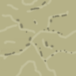

Templates hold descriptions of tiles and objects for use in a map. By default, there are two types of templates - hexagonal templates for world maps, and square templates for local area maps.
Each template has associated images to go with them. All images are stored as square tiles, at 96x96 resolution, then rescaled and reshaped to fit the type and zoom of map on display.
Terrain is the lowest level layer drawn on the map. Very simply, it is what people walk on, rather than bump into. In world maps, it describes the general vegetation and climate.
Features modify the terrain, or sit upon it. Hills and mountains are features (in world maps), as are walls and doors (in local maps). Features are always drawn ontop of the terrain tile.
Things are free floating objects which are not restricted to the tile grid. Multiple things can be on the same tile. On world maps, things are towns and cities. On local maps, they are tables, beds and chests.
SeaSea represents relatively shallow water, either coastal salt water or inland fresh water. It should be used where sea travel in small boats is easy. |
|
OceanOcean is deep water, nearly always salt water. Such waters are rarely travelled in small boats because of rough seas and being far from the sight of land. |
|
WetlandsWetlands are low laying areas half-water, half-land. |
|
CroplandCropland is cultivated farmland, consisting of fields, pasture and light woodland. Villages and farms tend to be common in this type of terrain, which is very much man made. |
|
GrasslandsGrassland is flat plains, often home to herd animals predators alike. It may be pasture for tamed animals, though is more likely to be wilderness. At any rate, there isn't much difference between the two. |
|
Dry GrasslandSimilar to grassland, dry grassland is flat grasslands, though the climate is bordering on semi-desert. Water, though not scarce, is in short display. Plants are hardy varieties, and may come and go with the seasons. |
|
|  |
Rock DesertRock desert is true desert - little or no rainfall, and hardly any growing plants. It may be hot or cold depending on the climate. The surface consists of pebbles and bolders. In hilly terrain, dry river valleys are weathered rocks will be common. |
Sand DesertThis is the stereotypical desert of hot sand dunes, sand storms and rare oasis. |